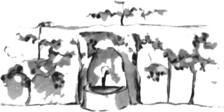

"Ví¹," øekl jsem malému princi, "ty tvé vzpomínky jsou moc hezké, ale já jsem je¹tì neopravil letadlo, nemám u¾ co pít, a byl bych také ¹»asten, kdybych mohl jít docela pomalouèku ke studánce."
"Moje pøítelkynì li¹ka...," øekl mi.
"Èlovíèku, u¾ nejde o li¹ku."
"Proè?"
"Proto¾e umøeme ¾ízní..."
Nepochopil, proè takhle uva¾uji a odpovìdìl mi:
"Je dobøe, kdy¾ jsme mìli pøítele, i kdy¾ máme umøít. Já jsem hroznì rád, ¾e jsem mìl pøítelkyni li¹ku..."
Neuvìdomuje si nebezpeèí, øekl jsem si. Nemá nikdy hlad ani ¾ízeò. Staèí mu trochu slunce...
Ale podíval se na mne a odpovìdìl na mou my¹lenku:
"Mám taky ¾ízeò... hledejme studnu..."
Mávl jsem unavenì rukou: nemá vùbec smysl hledat studnu nazdaøbùh v nekoneèné pou¹ti. Pøesto jsme se dali na cestu. Kdy¾ jsme tak kráèeli celé hodiny mlèky, snesla se noc a zaèaly se roz¾íhat hvìzdy. Vidìl jsem je jako ve snu, proto¾e jsem mìl ze ¾íznì trochu horeèku. Slova malého prince mi tanèila v mysli.
"Tak ty má¹ také ¾ízeò?" zeptal jsem se ho.
Neodpovìdìl mi na otázku. Øekl pouze:
"Voda mù¾e dìlat dobøe i srdci..."
Nerozumìl jsem jeho odpovìdi, ale mlèel jsem... Dobøe jsem vìdìl, ¾e se ho nesmím ptát.
Byl unaven. Sedl si. Já jsem si sedl vedle nìho. Chvíli mlèel a pak je¹tì øekl:
"Hvìzdy jsou krásné, proto¾e je na nich kvìtina, kterou není vidìt..."
"Ano, jistì," øekl jsem a mlèky jsem pozoroval vlny písku ve svitu mìsíce.
"Pou¹» je krásná...," dodal.
A mìl pravdu. V¾dycky jsem miloval pou¹». Usedneme na pískový pøesyp... Nevidíme nic... Nesly¹íme nic... A pøece nìco záøí v tichu...
"Pou¹» je krásná právì tím, ¾e nìkde skrývá studnu...," øekl malý princ.

Byl jsem pøekvapen, ¾e pojednou chápu to tajemné záøení písku. Kdy¾ jsem byl malým chlapcem, bydlil jsem ve starobylém domì a povìst vyprávìla, ¾e je tam zakopán poklad. Nikdy jej ov¹em nikdo nedovedl objevit a snad jej ani nehledal. Ale dodával kouzlo celému tomu domu. Mùj dùm skrýval ve svých hlubinách tajemství...
"Ano," øekl jsem malému princi, "a» u¾ je to dùm, hvìzdy nebo pou¹», to, co je dìlá krásnými, je neviditelné!"
"Jsem rád, ¾e souhlasí¹ s mou li¹kou," pravil.
Ponìvad¾ malý princ usínal, vzal jsem ho do náruèe a vydal jsem se znovu na cestu. Byl jsem dojat. Mìl jsem pocit, jako bych nesl køehký poklad. Zdálo se mi dokonce, ¾e není na Zemi nic køehèího. Ve svitu mìsíce jsem pozoroval to bledé èelo, zavøené oèi, kadeøe chvìjící se ve vìtru a øíkal jsem si: Co zde vidím, je jen skoøápka. To nejdùle¾itìj¹í je neviditelné... A ponìvad¾ se jeho pootevøené rty slabì usmívaly, øekl jsem si také: Co mì na spícím malém princi tolik dojímá, je jeho vìrnost ke kvìtinì, ten obraz rù¾e, který v nìm záøí jako plamínek lampy, i kdy¾ spí... A tu¹il jsem, ¾e je je¹tì køehèí. Lampy musíme dobøe chránit: staèí závan vìtru a lampa zhasne...
A jak jsem tak kráèel, objevil jsem na úsvitì studnu.